第一节｜给 AI 换专业身份
01｜专家的能力
同样一件活，领域专家会按这一行的规矩多想几步。
一份销售数据摆上来，通用 WorkBuddy 读数、出图、总结趋势就交活了。领域专家先理解业务目标，定下核心指标，查一遍数据质量，再找异常、析原因，最后给出能落地的建议。
写一篇小红书文案也是同样的差别。通用WorkBuddy只顾内容本身，领域专家还会想选题、标题、开头留存、种草逻辑、平台生态和互动设计。
专家 = 人格化的 Skill。 给一套可复用的做法配上岗位人设和方法论，就成了能以某个身份持续干活的 AI 同事。
02｜挑对做事方式
活越复杂，越该交给带结构的方式去做。
从一次性小活到复杂项目，WorkBuddy 有四种做事方式，能力一层比一层重：
- 普通任务：通用理解与执行，适合一次性的、说得清的任务。
- Skill：特定工具能力，适合需要稳定执行某个动作的事。
- 专家：人设、方法论加工具链，适合明确领域的单点专业问题。
- 专家团：多位专家配协作流程，适合需要拆解、并行、汇总的复杂项目。
前一种方式能干完的活，不用升级到后一种。真要用上专家团，先想清四件事：分工覆盖全没全、哪些步骤要等前一步、什么时候需要人拍板、最后谁来整合。
03｜召唤现成专家
现成专家点一下就能召唤，复杂项目再请出专家团。
召唤单个专家：打开「专家·技能·连接器」，从内容创作、数据分析、升学考试这些现成专家里选一个，点召唤，然后把任务直接交给它。
召唤专家团：专家团在单独的「专家团」入口里召唤。团长负责拆解任务、分派给不同的专家，最后汇总出一份完整方案。
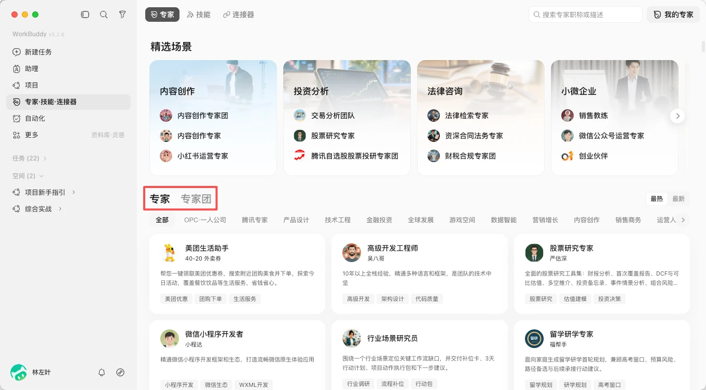
专家技能连接器列表
04｜创建自己的专家
把岗位和经验说清楚，expert-manager 会替你造一个专属专家。
- 创建专家聊天框：点击「我的专家」-「创建专家」，会自动使用expert-manage skill并打开专家创建聊天框。
- 说清岗位与经验：告诉 expert-manager 这个专家是谁、服务什么场景、按什么方法做事。
- 生成并注册专家：它生成专家档案，校验之后注册进「我的专家」。
- 召唤使用：回到「我的专家」，像调用其他专家一样把活派给它。
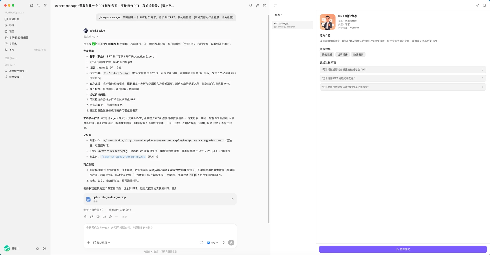
PPT制作专家档案
第二节｜把外部工具接进来
01｜接入连接器
官方连接器点开就用，没有内置的用「自定义连接器」自己配。
当前已经支持腾讯文档、腾讯会议、QQ 邮箱、TAPD 等常用工具。要连没有内置的工具，点右上角「自定义连接器」，按引导填好地址和凭证，能访问的范围由你自己定。
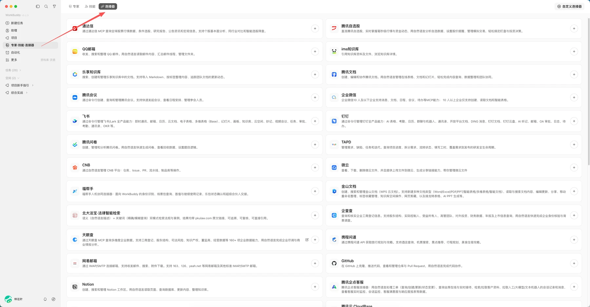
连接器列表
02｜连腾讯文档发公告
一条链走下来，草稿直接落进你的腾讯文档账号。
- 授权腾讯文档：在连接器里完成一次授权。
- 生成活动公告草稿：让 WorkBuddy 按活动信息写出公告，得到一份 .md 草稿。
- 上传到腾讯文档：在草稿右上角的「上传」菜单里选「腾讯文档」。
- 云端创建成功：公告出现在你的腾讯文档里，标题、活动基本信息表、议程表都齐了，可以直接接着改。
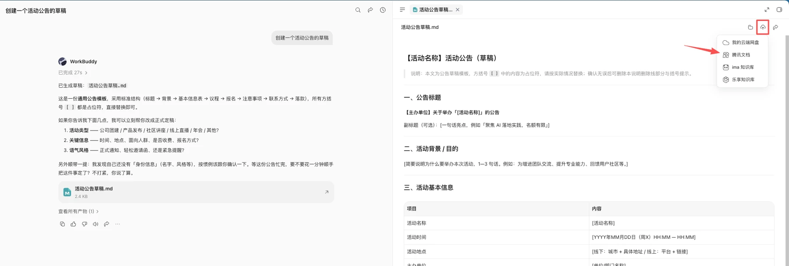
上传菜单选腾讯文档
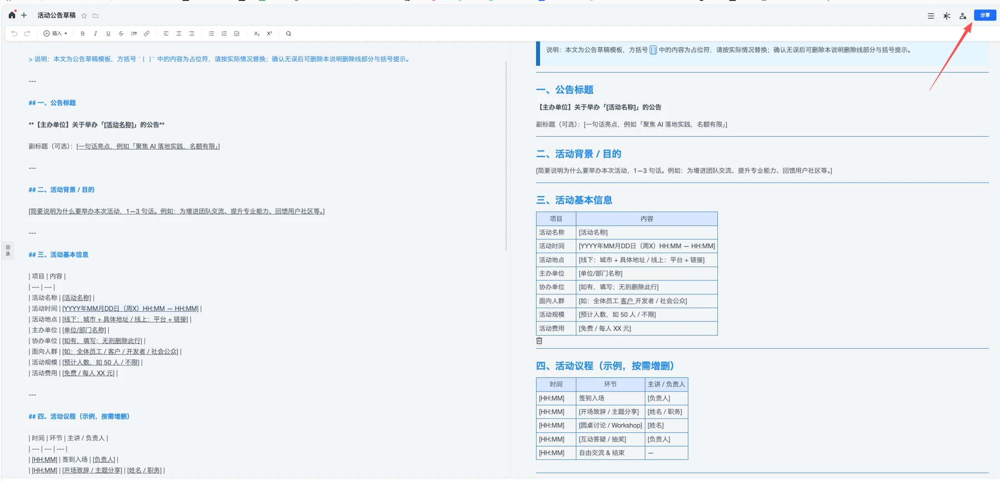
腾讯文档里的活动公告
03｜接入自己的模型
积分不够，或想把成本压下来，就把别家 API 或本地模型接进来。
接外部 API：从设置进入「模型」，点「添加模型」，选提供商、填 API Key。各种 coding plan 或自定义 API 都能用，比如 DeepSeek 只需要填一个 API key。
接本地模型：数据不出本机、可以离线跑、没有 Token 成本。
看住凭证：API key 属于敏感凭证，不要暴露在外面。
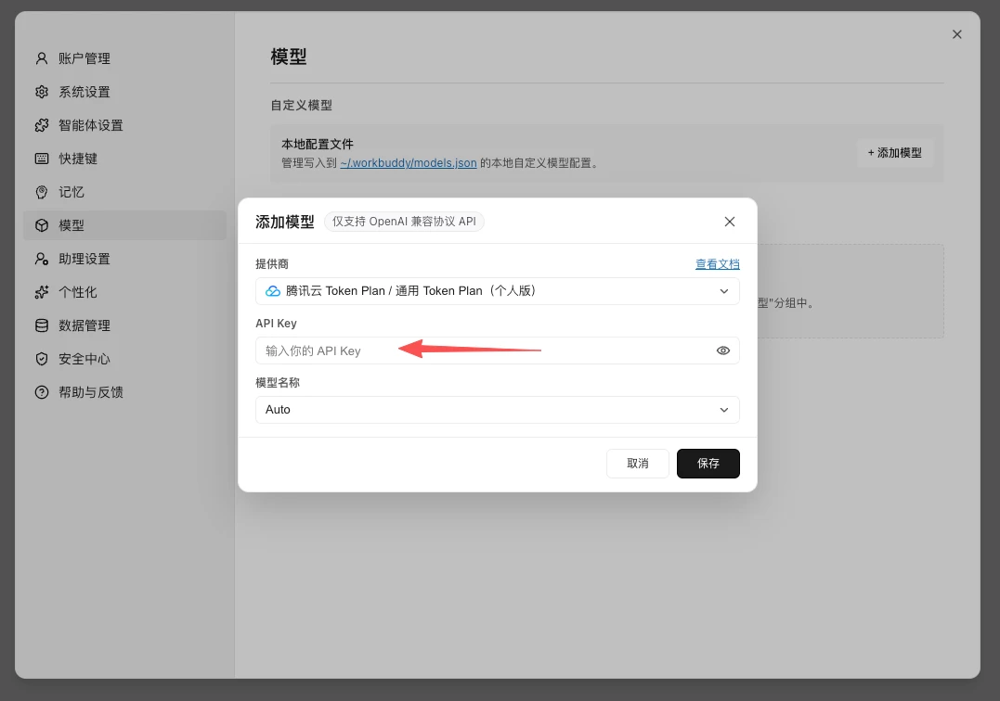
添加模型面板
第三节｜手机派活，电脑干活
01｜扫码绑定微信助理
接入微信助理只要扫个码，绑完先发一条只读指令确认通路。
- 助理设置：打开设置里的助理入口。
- 微信助理集成：进入配置页。
- 微信扫二维码：用手机微信扫描生成的二维码。
- 确认已绑定：状态显示已绑定之后，先发一条只读测试指令确认通路。
助理是 WorkBuddy 的远程控制功能：在手机上的即时通讯软件里发指令，远程控制电脑上的 WorkBuddy 执行任务。目前能接微信、企业微信、微信小程序、QQ、钉钉、飞书。飞书和钉钉的接入流程更长，要在开放平台建自建应用、加机器人、开最小权限，建议先在测试群里验证。
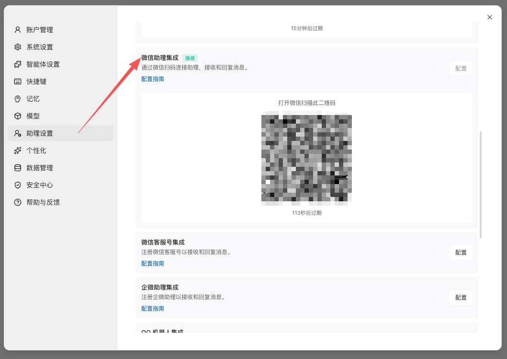
微信助理绑定二维码
02｜手机派活，本机验收
同一条任务，手机上发出，电脑上执行，两端实时同步。
在手机微信里给助理发一条任务，电脑端的同一个对话里就开始执行。出门在外也能派活，回来直接验收结果。
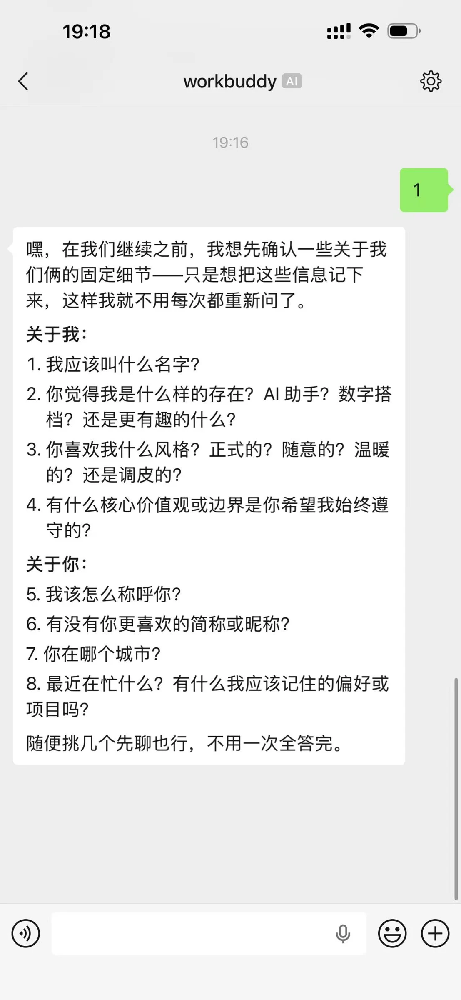
手机微信端派发任务
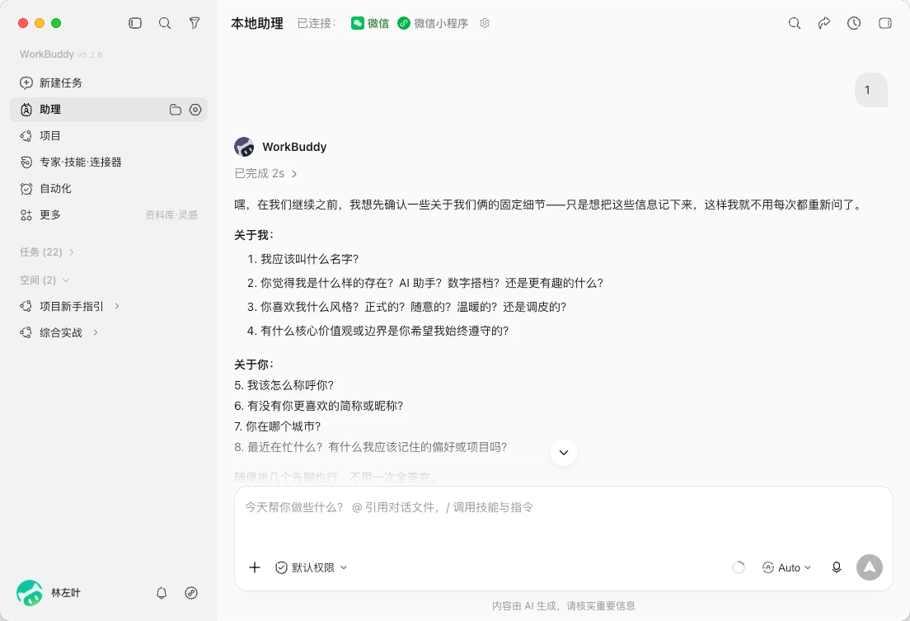
电脑端同步执行
03｜挑选运行模式
先分清活到底在哪跑，再决定要不要让电脑一直在线。
| 模式 | 任务在哪运行 | 电脑在线 | 适合任务 |
|---|---|---|---|
| 本机模式 | 已连接的那台电脑 | 要 | 本地文件、本地 Skill、已有工作区 |
| 云端模式 | 隔离的云端环境 | 不要 | 调研、写作、临时分析 |
在小程序首页一键切换「云端工作」和「连接电脑」。
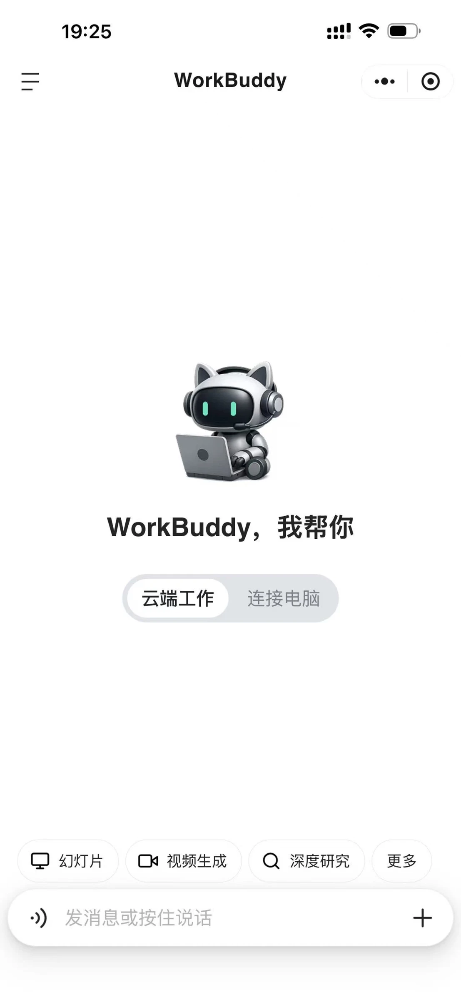
小程序首页
第四节｜让任务定时自己跑
01｜自动化的成立条件
人只管验收，前提是这活本身跑得稳。
把「时间固定、步骤相似、结果可检查」的重复活配上定时调度，交给 WorkBuddy 自己跑。跑得稳靠五样东西：
- 明确的触发时间：到点自动开跑。
- 可重复的输入：每次拿到的料一致。
- 够具体的提示词：目标和边界说清楚。
- 受控的工作目录：只在指定目录里动。
- 能判断成败的验收条件：跑完对得上才算数。
02｜挑出可自动化的活
六个问题答「是」越多，这活越该交给定时任务。
- 会重复吗：同样的活反复要做。
- 输入稳定吗：每次的数据来源一致。
- 步骤相似吗：流程基本不变。
- 结果可验收吗：对不对一眼看得出。
- 失败可重跑吗：出错重来没有副作用。
- 权限可控吗：访问范围限得住。
好起点是「每天 8 点收 10 条某方向的新闻、生成一份简报」这样范围清楚的小任务。
03｜建立自动化任务
在「自动化」页点一次「添加」，把参数配齐它就能自己跑。
一次要配齐：名称、工作空间、提示词、模型与技能、定时规则，以及要不要把结果推送到小程序。官方任务模板里已经放好每日新闻、周报、学习计划这些现成配置，改几处就能用。
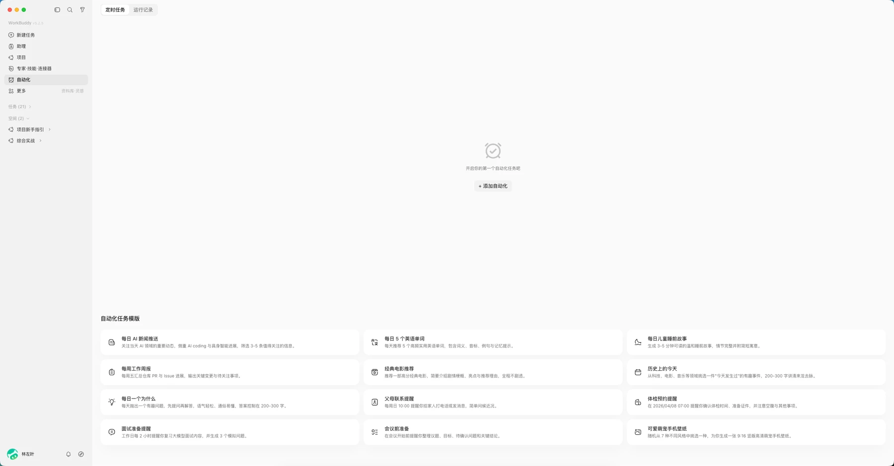
自动化任务页面
小结
- 专家与专家团：专家给 AI 换上专业身份，专家团让一群专家分工协作，交一份完整方案。
- 连接器与外部模型：连接器让 AI 够得着外部工具；积分不够时，还能接自己的 API 或本地模型。
- 微信助理与小程序：手机派活、本机执行、手机验收。
- 自动化任务：把重复活变成定时自己跑的任务。